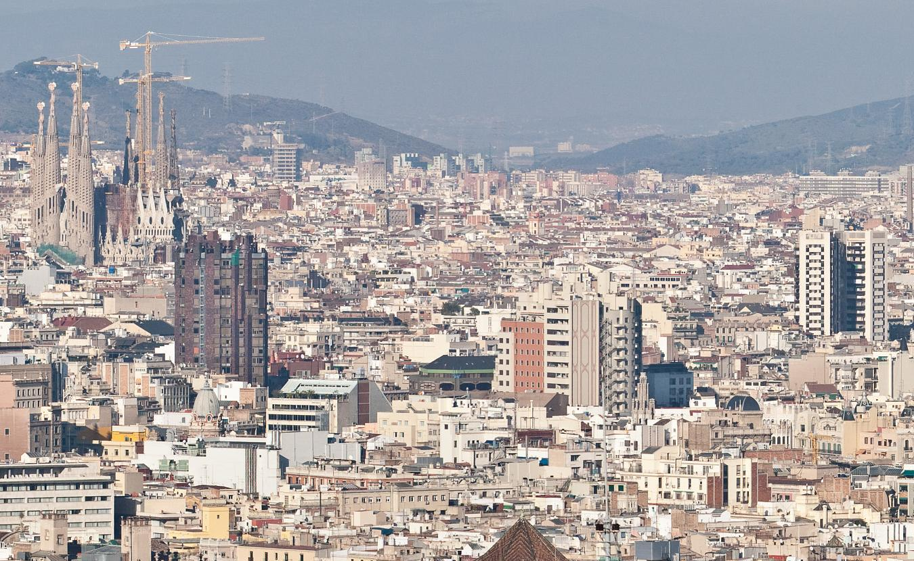
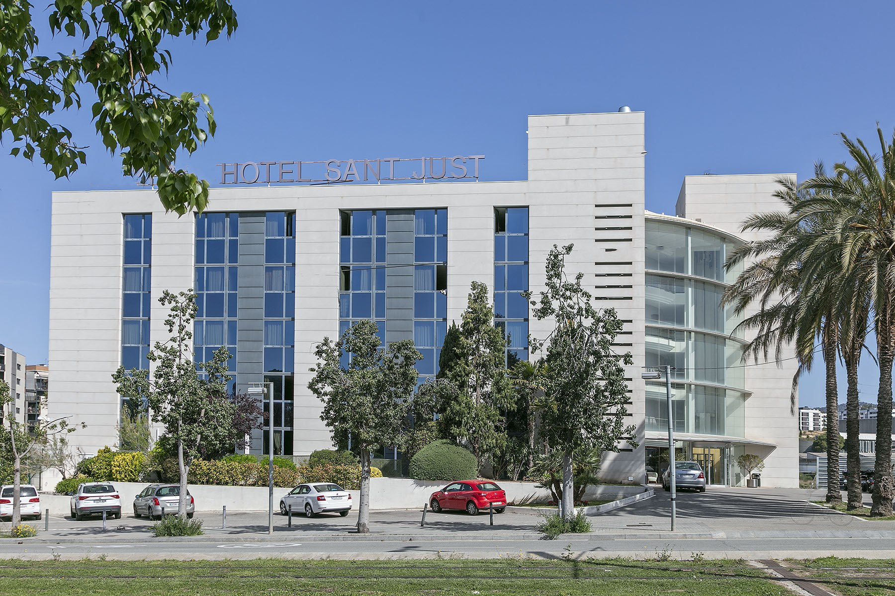
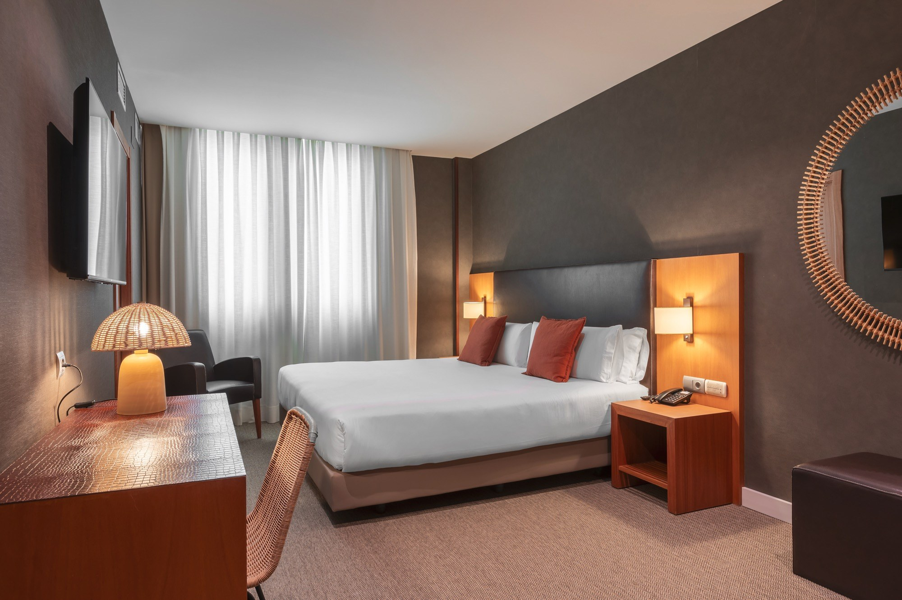
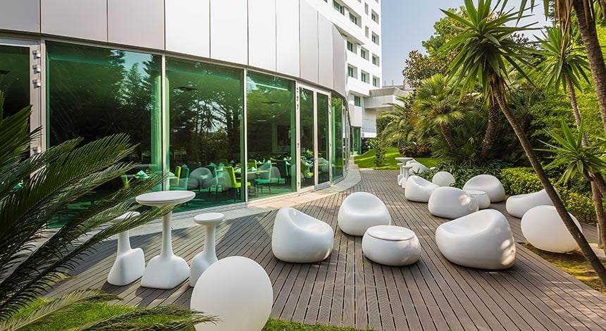
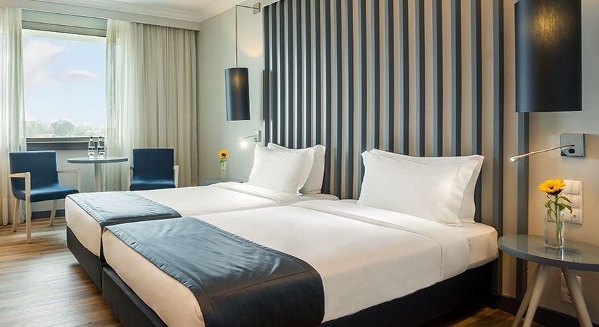

바르셀로나 · 몬세랏
가우디와 카탈루냐의 정체성
성가족성당·구엘공원·카사밀라 등은 19~20세기 카탈루냐 모더니즘의 상징입니다. 가우디는 자연 곡선과 빛·색을 건축에 끌어들여 ‘도시 자체가 예술’이 되게 했습니다. 몬세랏은 톱니 모양 암벽과 수도원으로, 카탈루냐인의 신앙·문화 구심점이기도 합니다.
2026.11.02(월) ~ 11.10(화) · 19+1TC · NO SHOPPING / OPTION
안내 초안 기준 · 현지 사정에 따라 동선이 조정될 수 있습니다.
성가족성당, 구엘공원, 카사밀라·구엘저택·카사바트요와 몬세랏을 아우르는 카탈루냐 문화 동선입니다.
리베르다지·렐루서점·포트 와이너리부터 파티마, 까보다로까, 신트라, 벨렘까지 포르투갈 대표 코스를 이어 갑니다.
세비야·코르도바·똘레도·마드리드 왕궁 후 Renfe 고속열차로 바르셀로나에 재진입하는 내륙 횡단 일정입니다.
인원
19+1TC · 2인1실
차량
전용버스 45인승
쇼핑·옵션
NO SHOPPING / OPTION
1일차 · 국내선 출국
OZ8900 · 제주(CJU) 06:30 → 김포(GMP) 07:45 · 아시아나
서귀포 집결 → 제주공항 (수하물 연계 안됨) · 김포→인천 전용버스
1일차 · 국제선 출국
TW402 · 인천 T1 11:30 → 바르셀로나(BCN) 18:25 · 티웨이
2일차 · 국내 연결
VY1182 · 바르셀로나 20:25 → 포르투(OPO) 21:15
7일차 · 고속열차
Renfe · 마드리드 아토차 → 바르셀로나 산츠 (포함)
8~9일차 · 귀국
TW408 · BCN 20:30 → ICN 16:50(+1, 11/10)
OZ8995 · 김포 19:50 → 제주 21:05 · 서귀포 해산
이번 일정에서 방문하는 도시와 유산을 중심으로, 현장에서 바로 떠올릴 수 있는 배경을 짧게 정리했습니다.
바르셀로나 · 몬세랏
성가족성당·구엘공원·카사밀라 등은 19~20세기 카탈루냐 모더니즘의 상징입니다. 가우디는 자연 곡선과 빛·색을 건축에 끌어들여 ‘도시 자체가 예술’이 되게 했습니다. 몬세랏은 톱니 모양 암벽과 수도원으로, 카탈루냐인의 신앙·문화 구심점이기도 합니다.
포르투
리베이라 지구와 돔 루이스 다리는 유네스코 세계유산 도시의 얼굴입니다. 상벤투 역의 아줄레주, 렐루 서점, 카르무 성당은 ‘타일과 책, 신앙’이 겹친 포르투갈 도시미학을 보여 줍니다. 포트 와인은 도우루 계곡에서 숙성·수출된 역사의 산물입니다.
파티마 · 리스본 · 신트라
파티마는 20세기 성모 발현 전승으로 세계적 순례지입니다. 리스본의 벨렘탑·제로니모스·발견기념비는 대항해 시대의 출발점이고, 까보다로까는 ‘유럽 대륙의 서쪽 끝’으로 불립니다. 신트라 성은 왕실 여름별장으로 낭만주의 풍경을 남겼습니다.
세비야 · 코르도바 · 똘레도 · 마드리드
세비야 광장·대성당·히랄다는 안달루시아의 화려함과 역사 층위를 보여 줍니다. 코르도바 메스키타는 모스크에서 성당으로 이어진 공존의 건축이고, 똘레도는 ‘세 문화의 도시’로 불립니다. 마드리드 왕궁은 스페인 왕정의 공식 얼굴이며, Renfe 고속열차는 현대 스페인의 연결망을 상징합니다.
일자별로는 현지 동선 중심으로 확대해 보여 줍니다. 차량은 실제 도로(OSRM), 항공·고속열차는 점선입니다.
현재 구간
실제 도로 동선
📍 1일차 동선
안내 초안입니다. 항공기 연발착·현지 사정에 따라 변경될 수 있습니다.
서귀포에서 집결한 뒤 제주국제공항으로 이동합니다. OZ8900 제주→김포 국내선이며, 수하물 연계가 되지 않으니 김포에서 다시 수하물을 찾아 인천행 버스에 실어야 합니다.
김포 도착 후 전용버스로 인천국제공항 T1으로 이동합니다. TW402 인천→바르셀로나 직항편으로 유럽 일정을 시작합니다. 장거리 비행이니 기내에서는 수분 섭취와 가벼운 스트레칭을 권합니다.
현지 시각으로 저녁에 바르셀로나 공항에 도착합니다. 가이드 미팅 후 차량으로 이동해 Hotel Acta Sant Just(또는 동급)에 투숙하며, 첫날은 휴식으로 시차를 맞춥니다.

안내 초안 · 일부 도시는 수배 진행 중이며 일급호텔 또는 동급으로 안내합니다.

호텔 전경
객실1박 · 바르셀로나(산트주스트)
또는 동급 · FIRST CLASS 수배 OK
Ctra. Reial 132, 08960 Sant Just Desvern
+34 934 70 04 10
공식 사이트 →
호텔 전경
객실리스본
수배 진행 중
세비야
수배 진행 중
똘레도 · 마드리드 권역
수배 진행 중
바르셀로나 귀국 전
수배 진행 중
바르셀로나 날씨 · 유로 체감 환율 · 스페인/포르투갈 참고 물가
연동 중...
7일 예보
참고용 · 카드·환전소와 다를 수 있습니다.
빠른 계산기 (EUR → KRW)
스페인어 · 포르투갈어 기본 문장을 화면에 바로 보여 주세요.
여행 전 짐 챙기기 후, 현지 분위기를 미리 느껴 보세요. (공식 관광 채널)
공식 채널 Spain · 스페인 관광청
공식 채널 Visit Portugal · 포르투갈 관광청
여행 중 긴급 상황 시 즉시 문의해 주세요.
대표 ☎ +34-91-353-2000
긴급 ☎ +34-648-924-695
주바르셀로나총영사관 ☎ +34-93-487-3153
대표 ☎ +351-21-781-7130
영사 ☎ +351-21-793-7200
영사콜센터 (24시간)
☎ +82-2-3210-0404
현지 긴급통합 112
스마트 가이드북 도입으로 인쇄물을 최소화하고 친환경 여행 문화에 동참합니다. (20인 기준 참고)
종이 절감
160장
탄소 감소
0.76kg
물 절약
1,500L
| 일자 | 상세 일정 | 식사 |
|---|---|---|
| 1일차 11/02(월) |
|
조— 중공항식 석기내식 |
| 2일차 11/03(화) |
|
조호텔 중현지 석현지 |
| 3일차 11/04(수) |
|
조호텔 중현지 석현지 |
| 4일차 11/05(목) |
|
조호텔 중현지 석특식 |
| 5일차 11/06(금) |
|
조호텔 중현지 석한식 |
| 6일차 11/07(토) |
|
조호텔 중현지 석현지 |
| 7일차 11/08(일) |
|
조호텔 중한식 석특식 |
| 8일차 11/09(월) |
|
조호텔 중현지 석— |
| 9일차 11/10(화) |
|
조기내 중기내 석공항식 |
스마트폰으로 스캔하면 스마트 가이드북을 열 수 있습니다.
https://indadady.github.io/261102_SpainPortugal/